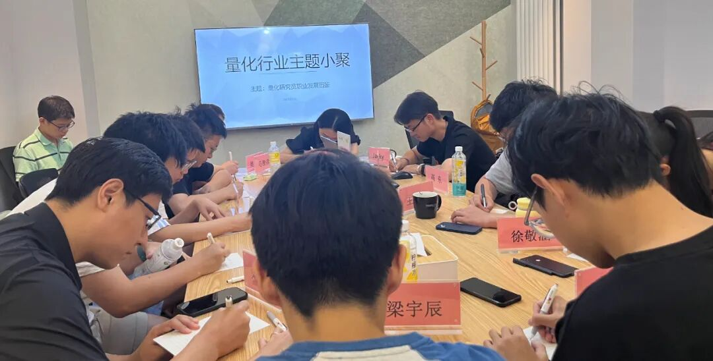

主题回顾
本次主题：量化研究员职业发展图鉴
主题背景：根据中国量化白皮书调查显示，行业内普遍认为做好 Quant 的关键素质先后顺序分别是：扎实的专业技能、聪明、快速领悟、对世界的认知、勤奋努力。聪明有助于单次研究的胜率，而努力则决定长期的水平。当下行业人均学历卷的不能再卷的情况下，还有什么因素推动了一个 Quant 从优秀走向卓越？
交流话题：1.从业者分享自己的职业生涯，如入行原因、工作内容、职业发展？2.如何开启自己的第一个实盘交易？3.如何更好地结合传统投资理论和量化技术构建投资策略？4.如何提升自己在团队中的领导力与全面素质？5.从业过程中遇到的困惑与心得感悟分享？
小聚成员
本次活动根据大家填写的报名表，依照“深度交流+多元讨论”的主旨，一共邀请15位小伙伴参与，从事量化行业全职工作的伙伴10位，目前在量化行业实习的伙伴5位，值得一提的是，参与本次小聚的全职和实习伙伴所在公司多为知名百亿私募、头部券商、自营机构。

活动反馈
感谢主办方举办的交流活动，认识了许多量化小伙伴，有做指增的，也有做CTA的；有来自国内头部私募的，也有来自券商自营的。通过本次活动了解到大家多元背景的成长路径，期待下次再聚！——CTA量化研究员
了解到了各个金融行业的朋友对于一些问题的看法，认识到了自己以前不了解的一些行业知识。尤其是听了一些前辈们的分享，明确了一些自己尚未了解的行业路径。——某百亿量化研究员一枚
今天的讲座听到了很多业内资深人士的分享，深感有些东西是可以靠短期学习获得的，有些东西却是需要靠长时间磨砺，沉淀获得的。感受到自己在这一行业还需要打磨，体会。——某外资暑期实习生
收获：量化FOF模式，私募发展曲线。——券商经纪Quant Dev
知道了Quant的主流方向以及大家所关心的一些问题。——有一定兴趣但毫无经验的学生
了解到了目前国内的私募和头部券商工作人员了解的各种前沿或者都在用的一些技术。也了解到目前衍生品量化的盘子还比较小。——从金融科技转向量化小白
了解到很多横向动态！除了researcher的日常，也接触到更多行业里的盈利点。——某北京量化股票researcher
了解到量化行业发展现状，日后同业交流可以更加顺畅。——某期货公司研究员
1.目前国内私募的实习生工作情况和对于未来工作的规划；2.了解了在私募的投研人员工作情况和困惑；3.了解了不同策略的近期表现和行业情况。——量化研究员&FOF投资经理
第二次来参加，更加有趣了！在各自公司内，大家有些都是在信息茧房之中，量化这个行业尤其如此，能有这样的机会了解大家的想法、见解、困难，非常难得。——不知名公司职员
了解行业动态和研究员想法。——某百亿投研
在一个竞争激烈的环境中披荆斩棘，祝所有量化从业者再创新高。——小说中的励志男吊丝
1.了解行业交易系统架构和一些量化私募现状；2.了解近期期货市场量化是在做些什么。——某私募研究员
认识了一群巨佬，各个同业。这场活动简直了，收获满满。从这里还判断到了行业未来的动态，对自己的未来发展也更有信心了。——朝阳区人民群众
感觉是非常好的机会，能与量化相关不同岗位，不同职业阶段的大佬畅聊，对量化的很多领域的发展有了很多新的认识。——某Quant实习生
认识了更多优秀的同业，非常开心！大家说出自己的困惑与烦恼，另一位朋友不经意的一句话就解开了这个困扰，或者是给了一种新的方向，这种同业群体间的讨论，感受很奇妙很有趣，希望下次再聚。——某北京私募奋斗者
大家的收获札记